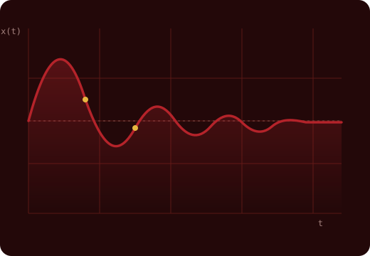

Ecuaciones Diferenciales
Modelado de sistemas de primer y segundo orden mediante ecuaciones diferenciales.
CURSO · INGENIERÍA ELECTRÓNICA
Todo sistema físico —un motor, un circuito, un robot que persigue un balón— cuenta la misma historia: cómo cambia en el tiempo. Este curso enseña a leer esa historia en cuatro lenguajes equivalentes —la ecuación diferencial, la función de transferencia, el diagrama de bloques y el espacio de estados— y a ponerla a prueba con MATLAB, Simulink y, al final, con un robot real en la cancha de Robogol.
«Las matemáticas son el lenguaje con el que Dios ha escrito el universo.»— Galileo Galilei

PRESENTACIÓN DEL CURSO
Sistemas Dinámicos estudia cómo describir, matematicamente y en software, el comportamiento en el tiempo de sistemas físicos —mecánicos, eléctricos y electromecánicos— que aparecen constantemente en la ingeniería electrónica: desde un sensor con su circuito de acondicionamiento hasta un robot móvil con su sistema de control. El curso avanza por cuatro representaciones equivalentes de un mismo sistema: la ecuación diferencial, la función de transferencia, el diagrama de bloques y el espacio de estados, siempre validadas con simulación en MATLAB y Simulink.
Justificación. La necesidad de anticipar el comportamiento de un sistema antes de construirlo —y de diseñar la forma de controlarlo— obliga a contar con herramientas de modelado rigurosas y con software capaz de simular ese modelo rápidamente. Estas cuatro representaciones son, hoy, la base común de cualquier proceso de análisis y diseño de sistemas de control.
CONTENIDO DEL CURSO
Cada unidad incluye una presentación, un laboratorio guiado con ejemplos resueltos, una lección de repaso teórico y su bibliografía. El proyecto final integra todo lo anterior en la construcción de un robot real.
Modelado de sistemas de primer y segundo orden mediante ecuaciones diferenciales.
Representación entrada-salida de sistemas mecánicos SISO y MIMO en el dominio de Laplace.
Construcción y simulación de sistemas eléctricos mediante diagramas de bloques en Simulink.
Representación matricial de sistemas dinámicos y su equivalencia con funciones de transferencia.
Concebir, Diseñar, Implementar y Operar un robot para la competencia Robogol.
RESULTADOS DE APRENDIZAJE
MATERIAL DESCARGABLE
Guías completas en PDF, disponibles también dentro de cada unidad.